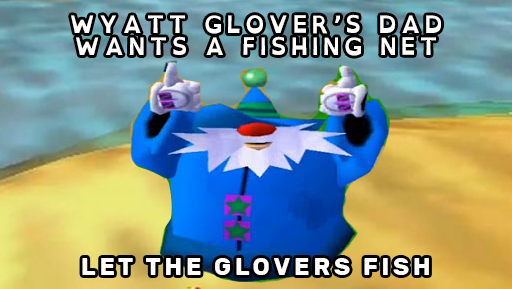
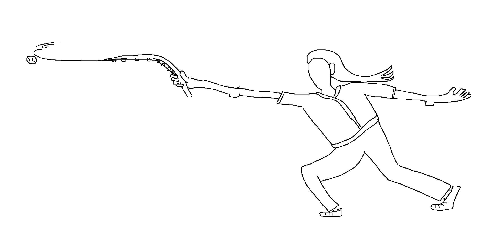

Bears' Blaseball Page

|
Bears' Blaseball Page |
Here's fan media I've created!I've been following Blaseball for a long time and I'm a creative type bear so I've been happy to flex my expressive muscles with my team, whether it be lore jams or different arts. Inky Rutledge Rookie Card :0002020-07-30 My first ever Blaseball fan art! I love the subtle motion of the ball and I'm glad squid Inky has been such a hit, even leading us to Binky my beloved! Wizard Hat with Brim2020-07-31 Funnily enough I invert this joke about a year and a half later. Made in Blender3D over the course of minutes. Anjanath2020-08-01 I forget the context lol Bevan Wise Tarot Card2020-08-02 Tarot sized blaseball cards for magic players was an easy pull. It's super funny for me to think about a foil wrapped pack of cards that's clearly larger than all the others because it has magic cards in it. Then my headcanon for Bevan Wise as an older black woman combined with my love of emoji combined to form the Bevan Wise Tarot Card.
Park Ranger2020-09-25 The National Park Service posted a great macroable image. Fishing Net Propaganda2020-10-06 We really wanted to get fishing net. Ironically this propaganda is apropos for neocites. We really wanted the fishing net. Glover2021-10-07 We really wanted the fishing net. This got poorly changed into red wizard robes at some point, but I can't find that version.  Bonk Jokes Lorejam2020-10-14 I'm very happy where we eneded up with Bonk, but my initial suggestion was a Jack in the Box wielding a bat. Bonk Joke2020-10-29 I took hatfights' very good art style and ruined it with this joke. Bonk signs, mostly. Art Switcharound2021-03-01 A sketching, inking, coloring passalong that I did with the help of Crash and Aya.
Too Many Birds2021-03-01 When both pitchers have friend of crows Jaylen's Visit2021-03-02 We very briefly entertained Jaylen Hotdogfingers of Blaseball fame. Oscar Dollie Gurgie2021-03-03 Somebody took a sip of our goat! King Weatherman2021-03-07 I can't claim that this was actually my doing, but I saw a swap Cory for Weatherman heckpost in Magic chat and the idea was hilarious to me. I dropped all my saved up votes on it and then wimdy stole our hearts. Second image is Chorby Short giving the newly recruited Weatherman some friendly ribbing.
Sutton Picklestein2021-03-08 An OG player entering the hall of shadows. Bittersweet for sure. Kurt Crueller Lore Jam2021-03-11 I liked the idea of fisher Kurt whipping balls out of the air with a fishing rod.  Sutton's Hat2021-03-12 Somewhere, the energy of Picklestein is felt. His hat levitates a few inches off its place on the mantle. Sutton Picklestein (2)2021-03-14 Sutton was necromancied and immediately went back to the hall. Iconic. Tiana Wheeler Lore Jam2021-03-15 The opposite of nominative determinism No Gods No Kings Weatherman2021-03-16 Old Man Logan Rodriguez having a back tattoo is very good. Cursed Barl2021-03-18 We are all love Carl. Well, we love Mee6 more but he's in the shadows now. Regardless, Carl didn't deserve to be turned into a Barl. Sports Game2021-03-18 What blaseball might look like as an early video game. Refined later. Blaseball the Pico8 Game2021-3-20 Not functional, but I did draw this in Pico8 Feral Ranger Warning2021-03-20 Magic Discord fans are rangers. This sign warns you of chat ferality, what we call an active chat.
Spectral Chorb2021-04-06 Redacted Chorby would give horrible ghostly batting advice. Froggone2021-04-06 Chorby! Where did she go!? Redacted ?! Collage Bonk2021-04-08 That Magic the Gathering card with the cool collage art had just dropped so I had collages on the mind. I also like the look of old school anatomical drawings, so I composed a Bonk Jokes at the X Games. (he hit the grind rail a lot that season)
Math Bear2021-05-11 Without looking it up I'm choosing to believe this was in reaction to fractional runs from fractional suns. Propaganda for Magic to journey into the Horizon2021-07-28 Something we say in Magic is "vote with your heart" so I did. And dropped like 30k votes on Horizon in one action, meaning our path towards the desert was hindered for about an hour.
|
|


{kind=link}